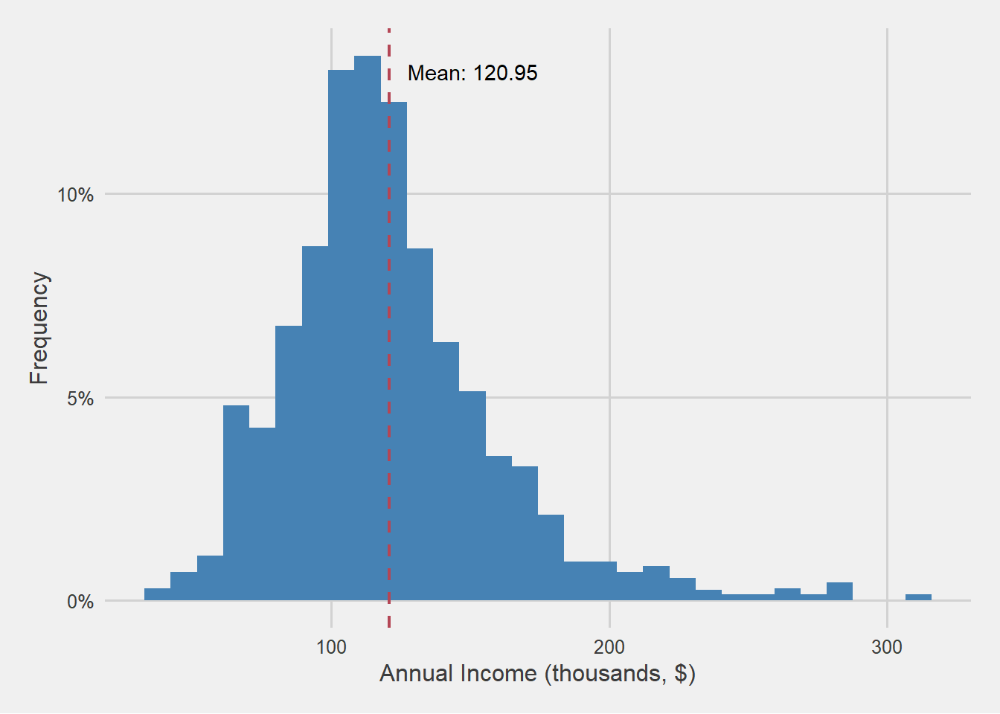
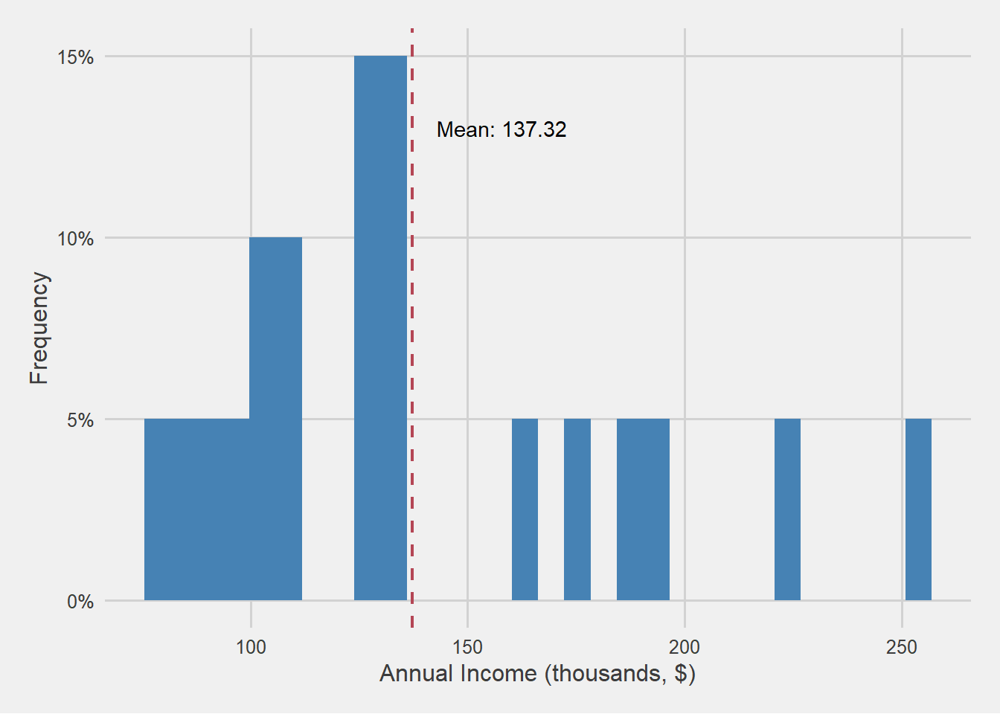
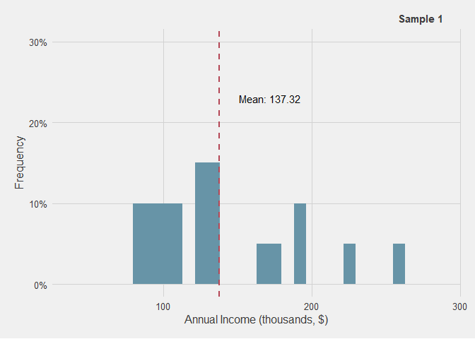
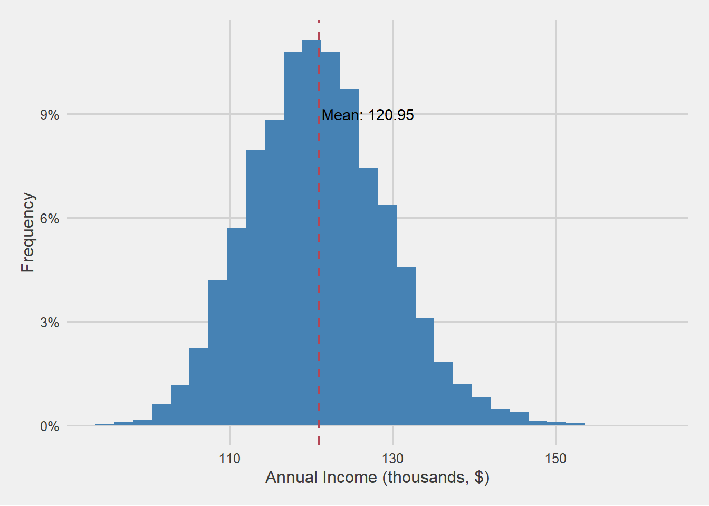
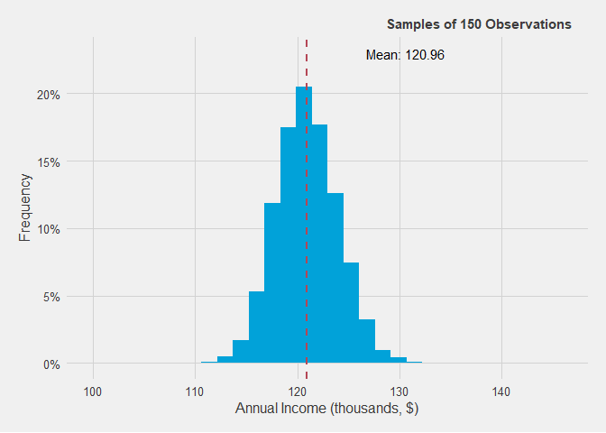

Building on Previous Insights: Recap from Our Previous Post
In our previous post on the Statistics Foundations series, we highlighted the potency of statistics as a valuable tool for further understanding issues of interest through data. To do so, we would ideally want to study the whole population, which represents the complete collection of entities affected by the issue under investigation. However, in most cases, obtaining data for every entity within this population is simply unfeasible due to constraints such as cost and logistics or even impossible. Consequently, we employ a strategy of working with samples—subsets of this population that are randomly selected in a manner ensuring that every entity has an equal probability of being selected.
These samples, though more manageable in size, serve as our window into the broader population, enabling us to draw conclusions and glean insights about the population—a process known as inference. However, it’s important to acknowledge that working with samples introduces a critical challenge: the inherent limitations stemming from their smaller size in comparison to the population. As a consequence, we inevitably encounter errors in our analyses.
The essence of these errors lies in the inability of small samples to capture all the intricate nuances present within the population. While we can gain valuable insights and broad trends from our samples, the finer details and subtle variations within the population often elude our grasp. Thus, we find ourselves contending with sampling errors that can influence the accuracy of our conclusions.
Examining Sampling Errors in Data Summarization: The Case of the Mean
At the core of statistical analysis lies the foundational task of data summarization—a process that condenses data into a concise and understandable format. This fundamental procedure yields a clear and easily comprehensible overview of the data, facilitating a straightforward grasp of its essential characteristics.
Among these essential characteristics, two prominently stand out: central tendency and variability. Central tendency relates to the value around which the different data points cluster around. Conversely, variability quantifies the extent to which data points deviate from this central point, providing insights into the dispersion or spread of data relative to its central location. For instance, the mean serves as an example of a central tendency measure, while the standard deviation exemplifies a variability measure.
To visually illustrate the impact of sampling error, we will once again utilize the Kaggle dataset used in in our previous post. This dataset contains information on 2,000 supermarket customers, including their age, annual income, and education level. For the purposes of this analysis, we will assume that this dataset represents our entire customer population.
Let’s envision a scenario: our objective is to rapidly glean insights into the annual income of our customers. One straightforward strategy to achieve this is by computing the mean income, which furnishes us with a succinct metric representing the central tendency around which the majority of our customers’ annual incomes gravitate. In this endeavor, we observe that the mean annual income stands at a noteworthy $120,950. In essence, this figure signifies that the bulk of our customers possess incomes clustered around this point.

Sampling 20 customers and calculating their annual income
In this hypothetical case, we possess information about the sample, and thus we can obtain information about our population without any error by directly observing it. Thus, now we know that our population has an average annual income of $120,950. However, in real-life scenarios, and as previously said, obtaining data for the whole population may be unfeasible or even not possible. For this reason, we will assume that we obtain a random sample of 20 customers and we compute the mean annual income from this sample.

As observed, the mean value within this sample diverges from that of the broader population. Specifically, the mean for this sample stands at $137,320, contrasting with the population mean of $120,950. This variance amounts to $16,370, and it encapsulates what we commonly refer to as “error.” Notably, in this instance, we possess knowledge about the population, allowing us to discern this difference.
For this very reason, the nomenclature we use to describe the metrics summarizing the characteristics of data varies depending on whether they are computed within the population or a sample. In the former case, they are referred to as parameters, whereas in the latter, they are known as statistics.
Randomness and sampling: Extracting several means of 20 observations
Moreover, it’s crucial to note that this sample was derived through a process of random selection. In other words, we handpicked 20 customers at random, ensuring that each customer had an equal likelihood of being included. This randomness implies that if we were to generate another sample of 20 customers, it would be improbable for this new sample to mirror the exact composition of the previous one or yield the same mean.
Figure 3 illustrates the annual income distribution of various samples, each consisting of 20 individuals randomly selected from our initial population (including the sample we previously examined). It becomes evident that the distribution undergoes fluctuations across these diverse samples. Consequently, this variability gives rise to a spectrum of computed means, ranging from as low as $118,125 to as high as $136,800.

Digging deeper: Exploring mean customer annual income with 10,000 different 20 samples
To deepen our comprehension of the variance in computed means, we embark on a more extensive analysis by replicating the previous procedure but on a much larger scale: generating precisely 10,000 samples, each composed of 20 individuals. For every one of these 10,000 samples, we compute the mean annual income. The resulting distribution of these 10,000 means, each originating from distinct samples of 20 individuals randomly selected from our complete population, is visually represented in Figure 4 through a histogram.

Figure 4 reveals significant insights. Notably, there is a substantial variation in the computed average annual incomes across the various samples, spanning a wide spectrum from $94,182 to $161,165. This disparity translates into an error range spanning from -$26,768 to $40,215 in relation to the annual income average for the population.
Nonetheless, an intriguing revelation emerges from this analysis. Despite the marked variability in sample means, the overall average of these mean annual incomes, drawn from distinct samples, precisely mirrors the population average. This observation means that the average incomes for the distinct samples consistently cluster around this point..
Moreover, it’s worth noting that the distribution of annual income means extracted from these various samples adheres to a bell-shaped pattern, commonly known as a normal distribution. This pattern signifies that as we move farther away from the population average, the number of observations gradually diminishes.
Taken together, this implies that, in most instances, the mean annual income estimated from our sample tends to be closer rather than farther away from the population’s mean annual income. Nevertheless, it’s important to acknowledge that there are still situations where significant deviations from the sample mean can occur. The key concern here lies in the fact that if we lacked information about the population and solely possessed a sample with an annual income mean of $161,165, we might mistakenly conclude that, on average, our customers are wealthier than they actually are.
Increasing sample size and analyzing mean annual income distribution of 10,000 samples
As previously mentioned, small samples encounter challenges in capturing the subtleties present within the population. Consequently, the larger the sample size, the more effectively we can apprehend these nuances. To illustrate this, we investigate how the variance of computed means changes when we collect samples of 150 customers, as opposed to the previous samples of 20 customers.
Once again, we generate 10,000 samples, each containing 150 customers, and calculate the mean annual income for each of these samples. Subsequently, we visualize the distribution of these mean annual incomes for these larger samples by creating a histogram.
Figure 5 provides a visual comparison between the distributions of means computed using 10,000 samples, each with 20 observations, and another set of samples, each comprising 150 observations.

Figure 5 provides insights akin to those observed with 20 observations: the distribution of means exhibits a bell-shaped pattern, with the average closely approximating the population mean. However, a significant distinction emerges: the range within which sample means deviate from the overall mean, equivalent to the population average, is notably narrower. In essence, the variability is considerably reduced, indicating that the margin for error when using samples of 150 observations is substantially smaller than that with samples of 20.
In this scenario, the distribution of means spans from $109,374 to $132,064, resulting in an error range of -$11,576 to $11,114 relative to the population mean. This range is significantly tighter compared to the error range obtained from samples of 20, where the deviation ranged from -$26,768 to $40,215.
Measuring the sampling error
Through the repetitive extraction of samples of consistent size from a given population, as demonstrated in our previous examples (with both 20 and 150-sized samples), we gain valuable insights into the potential magnitude of errors associated with samples of a particular size.
As we’ve witnessed, the average of multiple means calculated from samples of identical size closely aligns with, or is essentially identical to, the true mean of the population. Consequently, the spread or dispersion of these computed means from this point provides a measure of the magnitude of the sampling error. Put simply, the variability in the mean derived from multiple samples of equal size offers a quantifiable measure of the magnitude of the sampling error for samples of that particular size. This measure is commonly known as the standard error of the mean (which we will abbreviate as SE).
Mathematically, we can express this as the standard error of the mean being equal to the standard deviation of the means of the different samples. Specifically, we prefer to use standard deviation rather than variance because the standard deviation has the same units as the mean, while the variance has squared units. For instance, in the case of annual income, the unit for variance would be in dollars squared (\(\$^2\)), while for the standard error, it’s just in dollars ($). In other words:
\(\sqrt{Var(\bar{X})} = SE\)
This expression can be translated into the following form:
\(\frac{\sigma}{\sqrt{n}} = SE\)
Here, \(σ\) represents the population standard deviation, and \(n\) is the sample size. Establishing an inverse relationship between the standard error and the sample size: as the sample size increases, the standard error decreases. This principle aligns with our intuitive understanding, as seen in the previous post of the statistics foundations serious, and as visually depicted in Figure 5.
Let’s recall that the mean of any variable is equal to the sum of the values of each observation of that variable divided by the total number of observations (which equals our sample size): \(\frac{1}{n}\sum_{i=1}^{n}X_i\). Therefore, we can rewrite the previous formula as follows:
\(\sqrt{\text{Var}\left(\frac{1}{n}\sum_{i=1}^{n}X_i\right)} = SE\)
We also know that the variance of a random variable multiplied by a constant “a” is equal to the variance of that variable multiplied by the square of that constant, i.e., \(Var(aR) = a^2Var(R)\), where \(a\) is a constant, and \(R\) is a random variable. This means that:
\(\sqrt{\frac{1}{n^2}\text{Var}\left(\sum_{i=1}^{n}X_i\right)} = SE\)
Additionally, when dealing with a set of pairwise independent random variables (where the variability in one doesn’t depend on the others, as in our case), the variance of their sum is equal to the sum of their individual variances, i.e., \(\text{Var}[R_1 + R_2 + \cdots + R_n] = \text{Var}[R_1] + \text{Var}[R_2] + \cdots + \text{Var}[R_n]\), where \(R_1, R_2,…, R_n\) are pairwise independent random variables. This allows us to rewrite the formula for SE as:
\(\sqrt{\frac{1}{n^{2}}\sum_{i = 1}^{n}Var(X_i)} = SE\)
Let’s remember that our individual variables, denoted as \(X_i\), come from a population with variance equal to \(\sigma^2\). So, our formula becomes:
\(\sqrt{\frac{1}{n^{2}}\sum_{i = 1}^{n}\sigma^2} = SE\)
Since we’re summing up \(n\) identical values, we can simplify further:
\(\sqrt{\frac{1}{n^{2}}n\sigma^2} = SE\)
Ultimately, this can be further simplified to:
\(\frac{\sigma}{\sqrt{n}} = SE\)
Applying these formulas, we can now calculate the Standard Error of the mean for sample sizes of 20 and 150. When we compute the standard deviation of the means obtained from multiple samples of 20 customers, we obtain a value of 8.39. Conversely, for samples of 150 customers, we obtain a value of 3.01, which is approximately three times smaller in terms of standard error.
Alternatively, we can utilize the formula that links the standard error to the population’s standard deviation and the sample size, represented as $\frac{\sigma}{\sqrt{n}}$. Given our population’s standard deviation for annual income is 38.11, dividing this by \(\sqrt{20}\) yields a value of 8.52 for a sample size of 20, while dividing it by \(\sqrt{150}\) results in a value of 3.11 for a sample size of 150.
However, it’s important to note that there are disparities between the results obtained from these two approaches. This is because the first formula relies on a finite number of samples (10,000 in this case), and in order to obtain equivalent values, the number of samples would need to tend towards infinity, meaning a significantly larger amount of samples.
Summary
Sampling is necessary because obtaining data for the entire population is often impractical.
The use of samples introduces the challenge of sampling errors.
Sampling errors arise because small samples cannot capture all the nuances present in the population.
This leads to variations in common measures like the mean between the sample and the population.
To illustrate this, we simulated the extraction of 10,000 samples of the same size from our exemplary population and observed that:
The mean from different samples exhibits variability.
Despite this variability, the average of mean values from various samples tends to closely align with the population average.
A normal distribution pattern is evident in the distribution of annual income means from different samples, indicating that samples with means close to the population mean are more likely.
Larger sample sizes reduce the standard error and yield more accurate estimates, as they better capture the population’s intricacies.
When extracting multiple samples of the same size from a population and calculating their means, the average of these sample means corresponds to the population mean. This allows us to quantify the degree of error associated with that sample size by measuring their variability, i.e., how much they deviate from the population mean.
Standard Error (SE) is mathematically linked to the population’s standard deviation and sample size.
Increasing the sample size results in a smaller standard error.
SE serves as a valuable tool for quantifying the precision of sample-based estimates and is essential for robust statistical analysis.